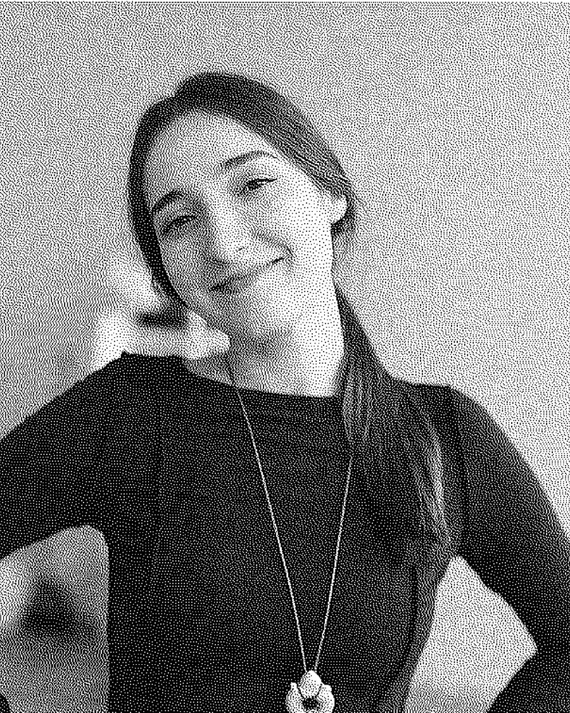

Діана ШайдаєваDiana Shaidaieva
Полтава, УкраїнаPoltava, Ukraine
Мистецький Мурашник — школа неформальної мистецької освіти у Полтаві. Розпочала свою діяльність з березня 2022 року, у відповідь на необхідність допомогти дітям та підліткам пережити травматичний досвід війни через творчі практики.
Головна мета Мурашника — комфорт дітей та створення умов для їхнього максимального творчого прояву, без обмежень, примусового підходу і застарілих правил.
Наразі у школі проводять курси і табори для дітей 3–13 років та співочі майстерні для дорослих. Напрямки занять: мальована і стоп-моушн анімація, ілюстрація, саунддизайн, комікси, письменництво, акторська майстерність, традиційний спів.
Діана Шайдаєва — викладачка дитячого музичного і акторського розвитку, засновниця і керівниця школи «Мистецький Мурашник», ідейниця і співорганізаторка «Полтавської ходи звіздарів». Навчалася у ПНПУ (Полтава) та Kobenhavns Professionshojskole (Копенгаген). Вивчала скандинавську модель освіти, креативні методики викладання, музику і драму. З 2018 року має різносторонню професійну практику у роботі з дітьми як викладачка, тренерка з неформальної освіти, методистка та координаторка освітніх проєктів.
Обожнює дітей :) Фокус уваги останніх років роботи — «польові дослідження дитинства і творчості»: феномен дитинства і його вплив на траєкторію розвитку суспільства, інноваційний потенціал дітей, креативні практики для розвитку навичок майбутнього, демократична освіта.
Mystetskyi Murashnyk ("Art Anthill") is a school of non-formal art education in Poltava. It began its work in March 2022, in response to the need to help children and teenagers cope with the traumatic experience of war through creative practices.
Murashnyk's main goal is children's comfort and creating conditions for their fullest creative expression, without restrictions, coercive approaches, or outdated rules.
The school currently runs courses and camps for children aged 3–13, as well as singing workshops for adults. Areas of study include: drawn and stop-motion animation, illustration, sound design, comics, creative writing, acting, and traditional singing.
Diana Shaidaieva is a teacher of children's musical and acting development, founder and director of the "Mystetskyi Murashnyk" school, and originator and co-organizer of the "Poltava Starwalkers' Procession." She studied at Poltava National Pedagogical University and Kobenhavns Professionshojskole (Copenhagen), focusing on the Scandinavian education model, creative teaching methods, music, and drama. Since 2018, she has built a diverse professional practice working with children as a teacher, non-formal education trainer, methodologist, and educational project coordinator.
She adores children :) The focus of her recent work has been "field research into childhood and creativity": the phenomenon of childhood and its influence on the trajectory of society's development, children's innovative potential, creative practices for developing future skills, and democratic education.